TỔNG QUAN
Local feature là gì và vì sao cần nó?
Góc, đốm (blob), mẫu ảnh cục bộ — nhìn phát nhận ra ngay
Vẫn tìm lại được khi ảnh xoay, phóng / thu, đổi sáng, đổi góc nhìn
Matching, panorama, nhận diện vật thể, SLAM, 3D reconstruction
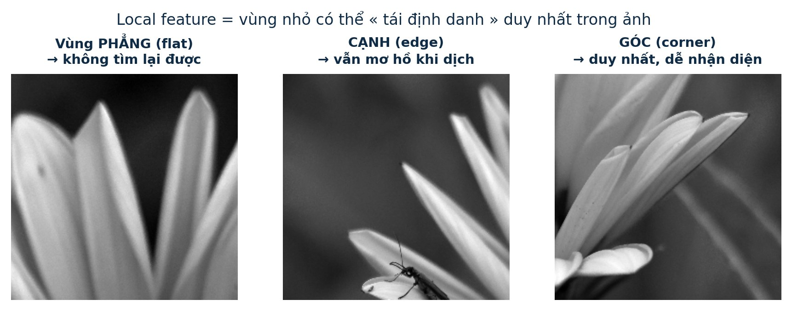
Mọi giải thuật feature đều đi qua 3 giai đoạn
Nhấn ▶ Tự động hoặc Sau › để xem một bức ảnh đi lần lượt qua các trạm — kết quả ở mỗi trạm là ảnh chạy thật, không phải vẽ tay.
Quét ảnh, chọn các điểm « đặc biệt »: corner, blob. SIFT dùng DoG, ORB dùng FAST.
Mã hoá vùng lân cận thành vector: SIFT 128 số thực, ORB 256 bit nhị phân.
So khoảng cách vector (Euclidean / Hamming) giữa các ảnh để tìm điểm tương ứng.
BƯỚC 0 · TIỀN XỬ LÝ
Trước khi vào giải thuật: ảnh màu → ảnh xám
cv2.SIFT_create() hay cv2.ORB_create(), OpenCV tự chuyển màu → xám bên trong rồi mới detect. Ảnh đã xám từ đầu thì bước này coi như xong.
- Vì sao phải về xám? Toàn bộ phép tính của 2 giải thuật — gradient, so sáng tối, moment — chỉ có nghĩa trên 1 số / pixel. Màu là 3 số (R, G, B) không có thứ tự « sáng hơn » tự nhiên.
- Bất biến màu sắc: cùng một cảnh dưới đèn vàng / đèn trắng cho 2 ảnh xám gần giống nhau ⇒ feature ổn định hơn.
- Nhẹ hơn 3× dữ liệu: giảm từ H×W×3 xuống H×W.
- Công thức là luma chuẩn ITU-R BT.601 — trọng số xanh lá cao nhất vì mắt người nhạy màu này nhất.
cvtColor(BGR2GRAY) trong OpenCV và loadSampleGray() mà mọi widget của trang này dùng
ảnh màu — tensor 3 chiều: mỗi pixel là 1 vector [R, G, B]. Ảnh mẫu: 1000×563×3 = 1.689.000 số
ảnh xám đầu ra — ma trận 2 chiều, mỗi phần tử 1 giá trị 0..255 (float). 1000×563 = 563.000 số
các bước sau nhân I với kernel nhỏ (Gaussian 5×5, đạo hàm…) bằng phép tích chập — xem bảng số thật ở Bước 1
| Khâu | SIFT | ORB |
|---|---|---|
| Ảnh đầu vào | ảnh xám Y = 0.299R + 0.587G + 0.114B (OpenCV tự convert nếu vào màu) | |
| Làm mượt | Gaussian blur σ = 1.6·k^s — chính là scale-space của Bước 1 | box 5×5 (qua integral image) trước mỗi phép so sáng tối của rBRIEF |
| Đa tỉ lệ | pyramid Gaussian, thu ½ mỗi octave | pyramid thu nhỏ ~1.2× mỗi level |
| Chuẩn hoá descriptor | vector 128: chia ‖v‖ → kẹp ≤ 0.2 → chia lại (Bước 4) | không cần — bit so sánh tương đối sáng hơn / tối hơn |
| Kiểu dữ liệu | Float32 0..255 nội bộ; descriptor mới là đầu ra chuẩn hoá | |
PHẦN 1 / 2
SIFT
Scale-Invariant Feature Transform
David G. Lowe — ICCV 1999 & IJCV 2004. « Gold standard » của feature detection: chính xác, bất biến xoay / scale / sáng trong nhiều năm.
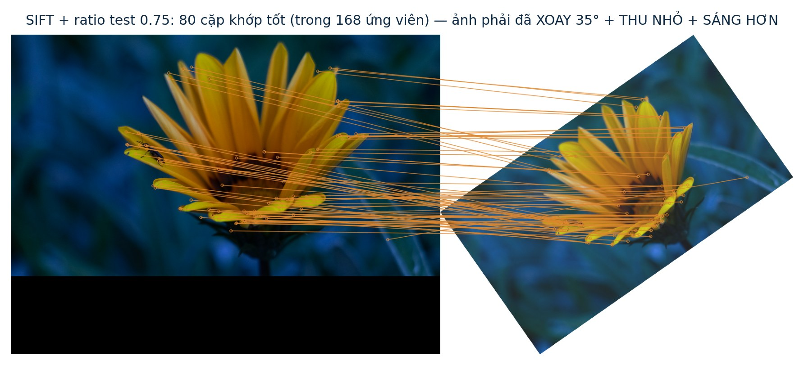
SIFT · PIPELINE TỔNG QUAN
4 bước biến một tấm ảnh thành tập vector đặc trưng
Tìm ứng viên keypoint ở mọi tỉ lệ bằng hiệu hai lần làm mờ Gaussian (DoG)
Tinh chỉnh vị trí bằng Taylor; loại điểm yếu tương phản và điểm nằm trên cạnh
Gán hướng θ theo histogram gradient — chìa khoá để bất biến xoay
Lưới 4×4 ô × 8 hướng gradient quanh keypoint → vector chuẩn hoá
1 Scale-space extrema (DoG)Tìm ứng viên ở mọi độ phóng đại — kèm mục « đi sâu »: vì sao DoG thay thế được Laplacian of Gaussian mở chi tiết
- Làm mờ ảnh bằng Gaussian với chuỗi hệ số σ tăng dần theo tỉ số k = √2
- Trừ hai mức mờ liên tiếp → ảnh DoG (Difference of Gaussians)
- So sánh mỗi pixel với 26 láng giềng (8 cùng mức + 9×2 mức σ kề trên dưới)
- Là cực đại / cực tiểu cục bộ ⇒ ứng viên keypoint ở scale σ đó
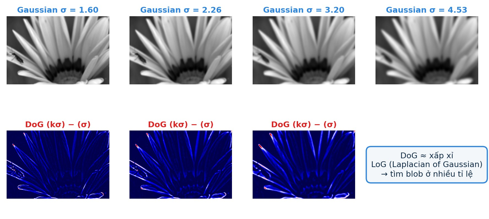
Đi sâu: vì sao DoG thay thế được Laplacian of Gaussian?
LoG là « bản chuẩn » để bắt blob: σ²∇²(G∗I) (Laplacian of Gaussian chuẩn hoá theo scale) đạt cực đại đúng tại tâm blob có kích thước ∝ σ (Lindeberg 1994). Nhưng nó đắt: với mỗi σ phải tính 2 đạo hàm cấp 2 của ảnh mờ. Lowe nhận ra một quan hệ đẹp từ phương trình khuếch tán (heat equation) cho phép lấy kết quả tương đương gần như miễn phí:
📖 Đọc thêm: Lowe 2004, §3 · Lindeberg (1994) — Scale-Space Theory in Computer Vision · Mikolajczyk & Schmid (2002) — so sánh detector affine + LoG
ảnh xám từ Bước 0 — đầu vào của scale-space
hạt nhân Gaussian nhỏ nhất, mỗi level nhân với increment σ để « mờ thêm một nấc » (tích chập phân tách 1D×1D). Bảng số thật bên phải
một « trang » mờ cho mỗi mức σ — chồng thành tensor H×W×6 mỗi octave
hiệu 2 trang kề — giá trị tại 1 pixel thật (x, y) = (, ): L(σ)=, L(kσ)= ⇒ D =
Image pyramid: cùng một phép biến đổi, lặp lại ở mọi kích thước ảnh
Bấm trực tiếp vào ô (octave × level) trong sơ đồ pyramid — hoặc kéo thanh level — để xem ảnh Gaussian / DoG thật tính trong trình duyệt, kèm vị trí các ứng viên keypoint.
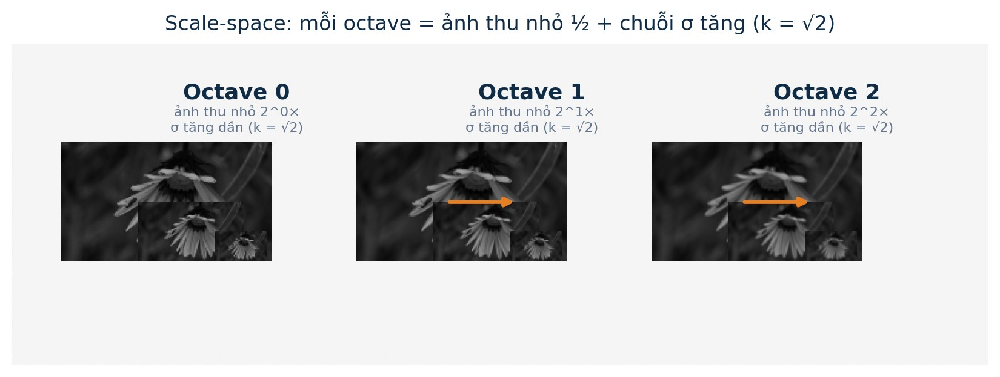
Hạ mẫu giữa các octave: làm bằng gì? Có phải « stride của kernel » không?
Trả lời ngắn: không phải stride. Stride là khái niệm của CNN (kernel « nhảy » dài sau mỗi bước nhân chập). Ở đây hạt nhân Gaussian vẫn quét từng pixel (bước 1); việc thu nhỏ ảnh là một bước riêng — hạ mẫu (decimation) — và luôn diễn ra sau khi làm mờ:
pyrDown: tích chập Gaussian 5×5 (kernel [1, 4, 6, 4, 1]/16, separable — quét từng pixel) rồi mới decimation ×2. Widget pyramid phía trên dùng biến thể đơn giản hơn: trung bình khối 2×2 rồi lấy 1 đại diện (hàm downsampleHalf trong imgproc.js) — cùng tinh thần « làm mượt rồi hạ mẫu ».resize nội suy tuyến tính (bilinear) về tỉ lệ (1/1.2)level, rồi chạy FAST riêng trên từng level. Bước nhảy 1.2 « mịn » hơn bước nhảy ×2 của SIFT — nhiều level hơn cho cùng dải scale, nhưng FAST quá rẻ nên không thành vấn đề.pyrDown: Gaussian 5×5 chạy trên mọi vị trí (stride 1), sau đó chỉ giữ các pixel chỉ số chẵn — kết quả là ảnh mờ đã « lọc băng thấp » ở độ phân giải nửa
downsampleHalf: out[y,x] = (L[2y,2x] + L[2y,2x+1] + L[2y+1,2x] + L[2y+1,2x+1]) / 4 — box filter 2×2 cộng decimation
với s = 1/1.2 — nội suy bilinear tính trung bình có trọng số của 4 pixel lân cận tại toạ độ lẻ (không trùng lưới gốc)
Stride nhảy mẫu trước khi lọc ⇒ aliasing. Nguyên tắc xử lý tín hiệu: low-pass filter → decimate, không đảo thứ tự. CNN thoải mái dùng stride vì các layer sau tự học bù — detector cổ điển thì không có cơ chế đó
Ảnh được thu nhỏ ½ mỗi octave; σ khởi đầu cũng nhân đôi, để DoG không lặp lại vô ích.
Chi tiết nhỏ chỉ nổi bật ở octave gốc; vật thể lớn chỉ nổi bật ở octave đã thu nhỏ.
Điểm là cực trị qua nhiều mức σ thường chịu được biến đổi hình học tốt hơn.
Paper dùng s = 3 khoảng scale mỗi octave (cần s+3 ảnh mờ), σ đầu = 1.6 · paper §4, hình 1
2 Keypoint localizationTinh chỉnh vị trí dưới-pixel bằng Taylor, loại điểm tương phản thấp và điểm trên cạnh — có bộ lọc tương tác + parabola số thật mở chi tiết
- Tinh chỉnh vị trí tới độ chính xác dưới-pixel bằng khai triển Taylor bậc 2 của DoG: giải x̂ = −H⁻¹·∂D
- Loại điểm tương phản thấp: |D| < 0.03 (thang [0..1]) ⇒ dễ là nhiễu, tìm lại không được
- Loại điểm trên cạnh: cạnh có nhiều cực trị « giả » kéo dài theo đường thẳng
- Dùng Hessian 2×2 của DoG: nếu tỉ số eigenvalue lớn hơn 10 ⇒ nghiêng về cạnh, loại bỏ
Cách tính H 2×2 — sai phân trung tâm, mượn phép thử của Harris corner detector
H không cần kernel hay cửa sổ lớn: toàn bộ chỉ cần 9 giá trị DoG trong lưới 3×3 quanh điểm đang xét. Bảng dưới là giá trị thật của ảnh mẫu tại (x, y) = (, ) — cùng pixel với ví dụ DoG ở Bước 1, ô giữa = D(x, y) = :
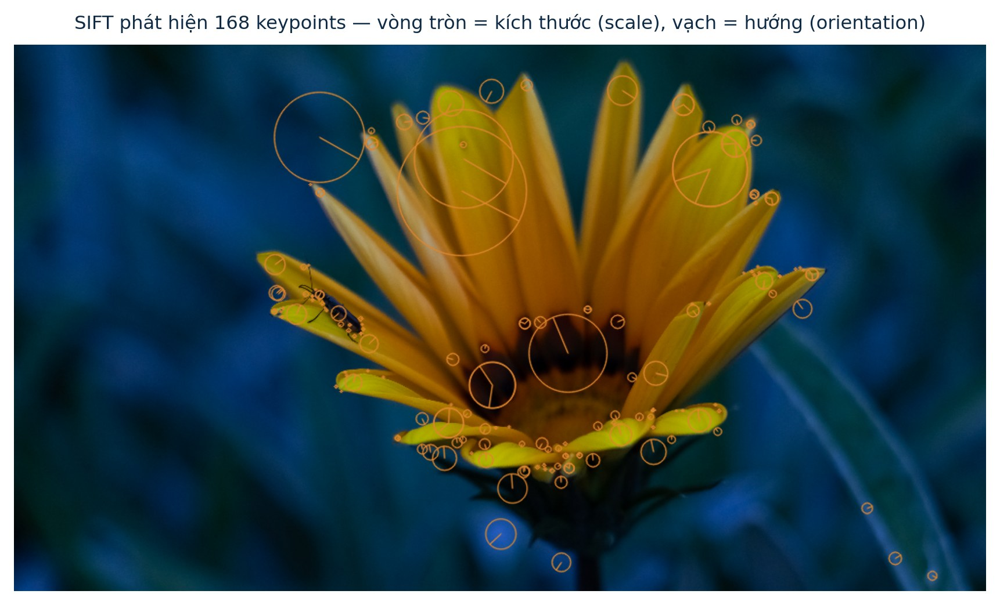
Hessian của D: [[Dxx, Dxy], [Dxy, Dyy]] — độ cong 2 hướng (lấy từ 9 pixel kề trong widget)
gradient (Dx, Dy) — đạo hàm cấp 1 trung tâm
léch phân số (pixel) tới cực trị thật của paraboloid — cộng vào (x, y) thô
tr²/det ≥ (r+1)²/r = 12.1 với r = 10 ⇒ cạnh ⇒ loại (tương tự tinh thần Harris ở phần ORB)
📖 Paper §4 (r = 10, ngưỡng 0.03) · widget trên tính lại đúng các công thức này trên pyramid thật của ảnh mẫu
3 Orientation assignmentGán « la bàn » θ cho từng keypoint bằng histogram 36 bins — walkthrough 5 chặng + thử số bins mở chi tiết
Chọn một keypoint rồi bấm ▶: xem đúng cửa sổ được bóc từ chỗ nào của bức ảnh đầu vào, gradient từng pixel, histogram 36 bins và hướng θ cuối cùng.
Trọng số = độ lớn gradient × cửa sổ Gaussian σ = 1.5·σkp · cột ≥ 80% cột cao nhất ⇒ thêm θ phụ (~15% điểm có nhiều θ) · nội suy parabola cho θ sub-bin · paper §5
Vì sao histogram hướng lại là 36 bins?
Mỗi bin gánh một cung 10°, đủ phủ trọn vòng tròn hướng quanh keypoint.
Thô hơn ⇒ θ sai lệch nhiều; mảnh hơn ⇒ histogram nhiễu, không ổn định. 10° là chỗ cân bằng thực nghiệm.
Paper nội suy parabola trên 3 bin quanh peak ⇒ θ chính xác nhỏ hơn cả 10°.
Ở bước 4, mỗi ô 4×4 chỉ dựng histogram 8 hướng (45°/bin) — vì đã xoay về θ = 0 nên không cần mảnh hơn.
mỗi pixel trong cửa sổ cho 1 hàng [gx, gy] — hiệu pixel kề (n ≈ 1000 cho bán kính ~18)
toạ độ cực: mag = √(gx²+gy²), ang = atan2(gy, gx)
histogram: mỗi pixel đổ trọng số mag·Gaussian(1.5σkp) vào bin ang/10° (nội suy tuyến tính giữa 2 bin kề)
peak của H (nội suy parabola) — 1 số duy nhất gán cho keypoint; peak phụ ≥ 80% ⇒ nhân bản keypoint với θ khác
4 Descriptor 128-D« Vân tay » 4×4×8 của keypoint + chuỗi chuẩn hoá 3 bước với số thật mở chi tiết
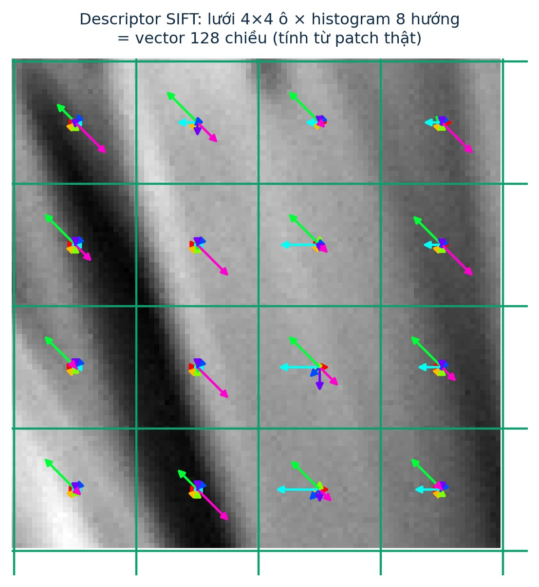
- Lấy cửa sổ 16×16 pixel quanh keypoint — đã xoay về θ = 0°, scale theo σ
- Chia thành lưới 4×4 ô, mỗi ô dựng histogram 8 hướng gradient
- Nối 16 ô × 8 số = 128 chiều ⇒ một vector duy nhất cho mỗi keypoint
- Chuẩn hoá đơn vị độ dài + kẹp giá trị ≤ 0.2 rồi chuẩn hoá lại ⇒ bất biến sáng / tương phản
vector float — so sánh được bằng khoảng cách Euclidean. Hai patch trông giống nhau ⇒ hai vector gần nhau, dù ảnh đã xoay / thu phóng / đổi sáng.
gradient (gx, gy) của 256 pixel trong cửa sổ đã xoay về θ = 0
tensor descriptor: 16 ô không gian × 8 bin hướng — mỗi phần tử = tổng trọng số gradient
« duỗi » (flatten) T theo thứ tự ô → 128 số; 16 giá trị đầu của 1 keypoint thật (x = , y = , σ = ):
① v ← v/‖v‖ (‖v‖ = ) · ② kẹp mọi phần tử > 0.2 về 0.2 — keypoint này có thành phần bị kẹp · ③ chia ‖v‖ lần nữa. Bước kẹp cắt đuôi « quá dominant » của gradient lớn để một vệt sáng chói không nuốt mất phần còn lại
cùng điểm này trên ảnh đã xoay cho descriptor v′ ⇒ khoảng cách Euclidean ‖v − v′‖ = (nhỏ so với cặp ngẫu nhiên ~0.8–1.4) — đó là « match »
Kết quả: matching ghép điểm giữa hai ảnh đã bị biến đổi
PHẦN 2 / 2
ORB
Oriented FAST and Rotated BRIEF
Rublee, Rabaud, Konolige & Bradski — ICCV 2011 (OpenCV Labs). Ghép FAST + BRIEF, thêm scale & orientation: nhanh hơn SIFT ~1–2 bậc độ lớn, miễn phí hoàn toàn.
- FAST + pyramid + Harris — detector — tìm keypoint nhanh, có scale
- Intensity centroid — gán hướng θ cho keypoint
- rBRIEF (steered) — descriptor 256-bit bất biến xoay
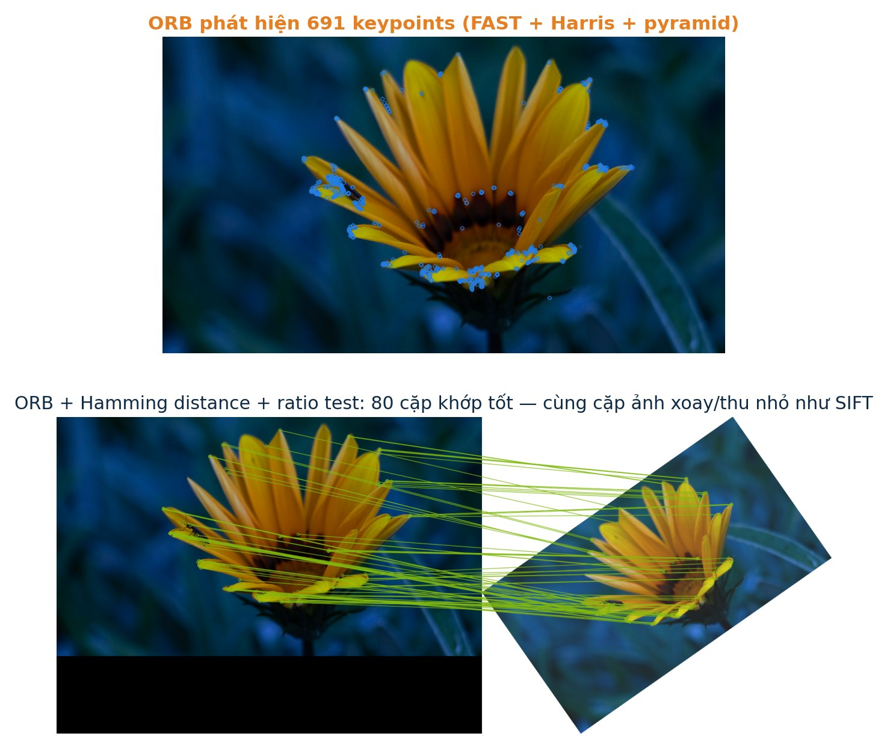
ORB · PIPELINE TỔNG QUAN
Công thức của ORB: FAST (detect) + rBRIEF (describe)
mỗi level của pyramid
FAST + pyramid + Harris ranking
hướng từng keypoint
256-bit descriptor
so khớp Hamming
SIFT có patent (đến 2020) và chậm — robot / drone / điện thoại cần feature real-time, miễn phí.
Descriptor binary « thô » hơn float của SIFT nhưng đủ tốt — và nhanh hơn ~1–2 bậc độ lớn.
Nền tảng của ORB-SLAM, cookie của nhiều pipeline AR / mobile / edge device.
Thử thách nổi tiếng: thời BRIEF chưa xoay được, ORB thêm cả scale (pyramid) lẫn xoay (steered) — hai thứ BRIEF gốc yếu nhất. Tổng quan ORB trên Wikipedia
1 FAST: phát hiện corner bằng phép so sánh sáng tối16 pixel trên vòng tròn bán kính 3 — kèm vector 16 giá trị thật mở chi tiết
- Xét 16 pixel trên vòng tròn bán kính 3 quanh điểm ứng viên p
- Corner nếu ≥ 12/16 điểm liên tiếp đều sáng hơn p + t hoặc tối hơn p − t (ngưỡng t; ORB dùng FAST-9 + non-max suppression)
- Siêu nhanh — chỉ phép so sánh số nguyên, không phải tính đạo hàm như DoG / Harris
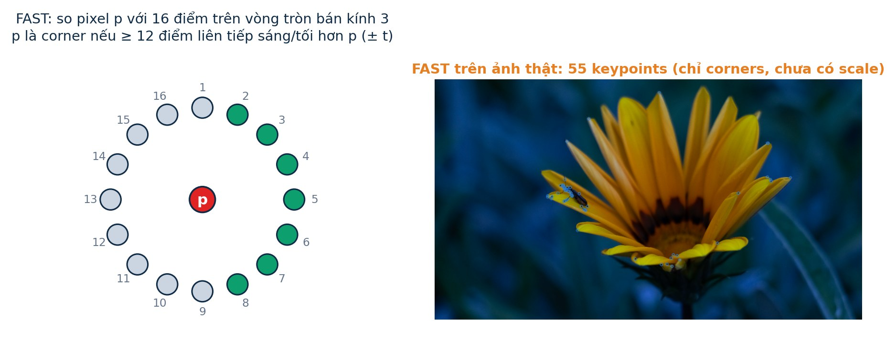
độ sáng pixel trung tâm = — mốc so sánh
16 giá trị sáng theo thứ tự vòng (bắt đầu từ đỉnh, ngược kim đồng hồ) — bảng bên phải
mỗi vị trí: sáng hơn p+t (+1) / tối hơn p−t (−1) / lưng chừng (0)
cùng dấu liên tiếp (quanh vòng) = ≥ 9 ⇒ đủ điều kiện FAST-9 ⇒ p là corner
Paper FAST: Rosten & Drummond, ECCV 2006 — PDF gốc · Tutorial OpenCV
2 Pyramid + Harris: bổ sung scale và chọn điểm mạnh nhấtCông thức Harris & Stephens 1988 soi tới từng ma trận M, eigenvalue, R — ngay trên ảnh mở chi tiết
Kéo thanh top-N để xem Harris xếp hạng điểm FAST. Sau đó rê chuột lên ảnh trái (hoặc bấm 3 nút mẫu) ở bảng « soi ma trận » để thấy từng thành phần của công thức biến thành số thật.
gradient (Ix, Iy) từng pixel trong cửa sổ — heatmap trong widget
structure tensor 2×2 — tổng 49 pixel của 3 tổ hợp đạo hàm (bảng số thật bên phải)
eigenvalue của M: λ₁ = , λ₂ = — cả hai lớn ⇒ góc thật
= (dương lớn ⇒ góc; âm ⇒ cạnh; ≈ 0 ⇒ phẳng) — chỉ cần det & trace, không cần eig riêng
FAST không có thước đo « độ góc » và báo nhiều điểm trên cạnh ⇒ ORB tính Harris response cho mọi FAST keypoint, xếp hạng theo level rồi response, giữ top-N (paper: N = 500) · ORB paper §3.1 · Harris & Stephens (1988) — paper gốc
3 Intensity centroid: xác định hướng θ bằng « tâm khối sáng »2 moment + 1 atan2 — với số thật của 1 keypoint mở chi tiết
- Coi cường độ sáng của pixel như « khối lượng »: vùng sáng ⇒ tâm khối lệch về phía đó
- Tính moment trên patch quanh keypoint: m₁₀ = Σ x·I(x,y), m₀₁ = Σ y·I(x,y)
- Vector từ tâm patch tới centroid chỉ hướng θ của keypoint
- Nhanh hơn histogram 36 bins của SIFT, vẫn ổn định ở góc xoay lớn
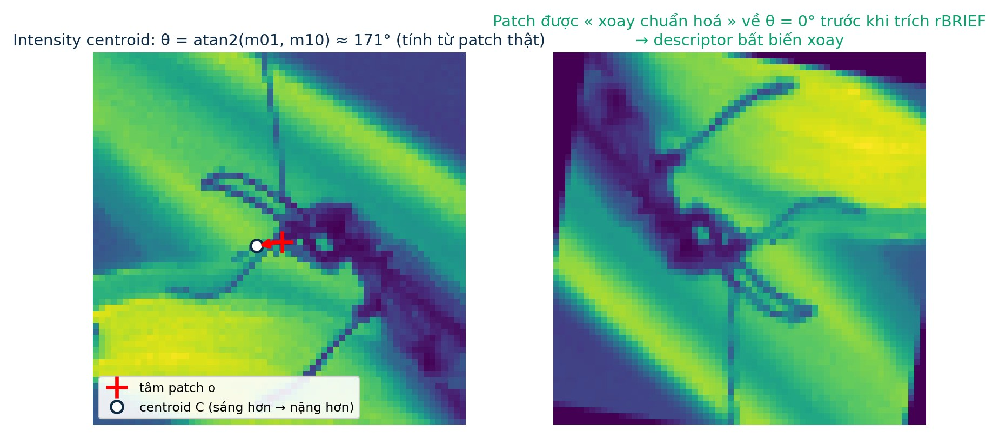
patch quanh keypoint — 961 giá trị sáng
= — « tổng khối sáng » (chuẩn hoá)
m₁₀ = Σ x·I = · m₀₁ = Σ y·I = — khối sáng lệch về đâu
= ° — so sánh: SIFT phải dựng histogram 36 bins rồi mới ra θ
📖 ORB paper §3.2 · dựa trên Rosin (1999) — moments cho góc cạnh
4 rBRIEF: descriptor 256-bit bất biến xoayBao gồm: con số 205,590 tính từ đâu, thuật toán greedy học 256 cặp, ma trận xoay và demo Hamming trên bit thật mở chi tiết
BRIEF đếm từ đâu: 1 test = 1 bit so sáng tối
Mỗi phép test lấy 2 ô 5×5 (đã làm mượt bằng integral image) trong patch 31×31 quanh keypoint: nếu độ sáng ô thứ nhất < ô thứ hai ⇒ bit 1, ngược lại ⇒ bit 0. Chọn 256 test ⇒ descriptor 256 bit. Câu hỏi then chốt: 256 test đó chọn theo cách nào trong số tất cả các khả năng?
Con số 205,590 tính từ đâu?
Cách tính lại theo Gil's CV Blog — tutorial binary descriptors (phần 3); số học kiểm chứng bằng brute-force trong scripts/generate_assets.py (hàm verify_205590()). Lưu ý: một số cách đếm khác lấy vùng 27×27 = 729 ô ⇒ ra con số hơi khác — bản chất đều là « chọn 2 ô không chồng từ ~26–27 ô cạnh ».
Xoay toạ độ các cặp theo θ keypoint trước khi so sáng tối; góc lượng tử hoá 2π/30 (12°) thành bảng pattern có sẵn.
So 2 chuỗi bit: XOR rồi đếm bit 1 — phần cứng làm trong 1 lệnh. Descriptor 256 bit = 32 byte (SIFT: 512 byte).
Nhỏ hơn 16 lần so với 128 số thực của SIFT; đủ tốt trong thực tế (benchmark ở phần So sánh).
Xoay pattern bằng ma trận Rθ — 1 cặp test thật
Với θ = ° của keypoint ở Bước 3, mỗi cặp toạ độ test (x, y) được nhân với ma trận xoay trước khi lấy mẫu — nhờ vậy cùng vùng vật thể cho cùng chuỗi bit dù ảnh đã quay:
[x′, y′]ᵀ = Rθ·[x, y]ᵀ — làm cho mọi 256 cặp của pattern; giá trị toạ độ được lượng tử hoá về lưới pixel
Demo Hamming trên 256 bit thật
BRIEF gốc: Calonder et al., ECCV 2010 · rBRIEF & thuật toán greedy: ORB paper §4.3 · BRIEF trên OpenCV
Kết quả: nhanh và vẫn khớp tốt trên cùng cặp ảnh
SO SÁNH
Cùng một tấm ảnh, hai giải thuật — hai kết quả khác nhau
Để thấy sự khác biệt ngay từ bước detect, bật/tắt 2 lớp ứng viên dưới đây (tính lại bằng JavaScript trên cùng một ảnh mẫu):
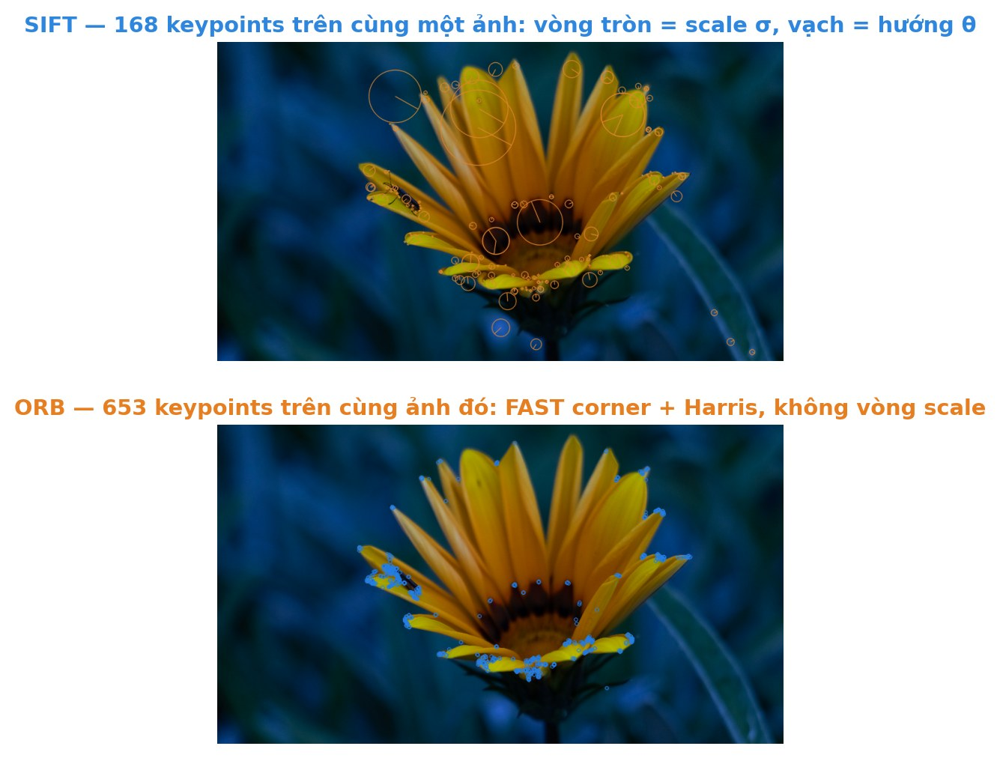
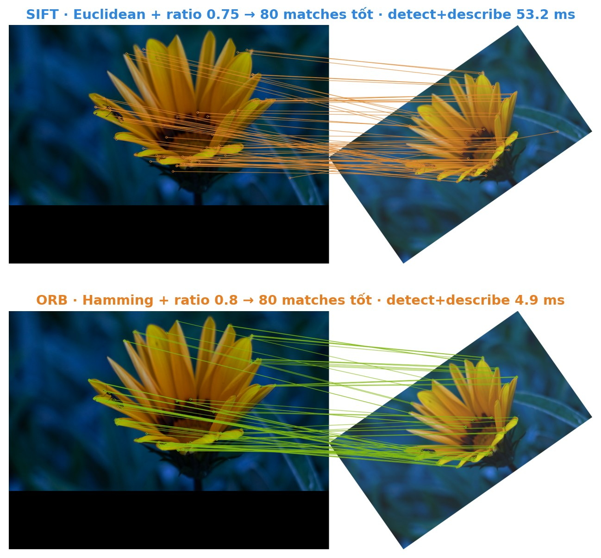
Theo chân một keypoint « cánh hoa » qua cả hai giải thuật
- Đốm sáng trên cánh là blob ⇒ cực trị DoG tại σ riêng (nói rõ vật to thế nào)
- Taylor tinh chỉnh (x, y, σ) dưới-pixel; Hessian loại điểm nằm trên gân cánh (cạnh)
- θ từ histogram 36 bins gradient — mô tả « dirección nền » quanh điểm
- Descriptor: 16×16 patch xoay về θ, gom thành tensor 4×4×8 ⇒ 128 số thực, chuẩn hoá + kẹp 0.2 · so khớp bằng Euclidean
- Cạnh cánh gặp gân hoa tạo corner ⇒ FAST-9 bắt trong ~20 phép so sánh số nguyên
- Harris R = det − 0.04·trace² xếp hạng, giữ top-N mỗi level pyramid
- θ = atan2(m₀₁, m₁₀) — 2 moment « tâm khối sáng », không cần histogram
- Descriptor: patch 31×31 xoay theo θ, 256 cặp so sáng tối ⇒ 256 bit · so khớp bằng Hamming (XOR + đếm bit 1)
Bảng so sánh & benchmark thật
| Tiêu chí | SIFT | ORB |
|---|---|---|
| Ra đời | Lowe, 1999 / 2004 | Rublee et al., ICCV 2011 |
| Detector | Cực trị DoG trên scale-space | FAST + pyramid + Harris |
| Orientation | Histogram 36 bins gradient | Intensity centroid |
| Descriptor | 128-D float (512 byte) | 256-bit binary (32 byte) |
| So khớp | Euclidean (float) | Hamming (XOR — rất nhanh) |
| Bất biến | Xoay · scale · sáng · affine nhẹ | Xoay · scale · sáng |
| Tốc độ | Chuẩn mực, chậm hơn | Nhanh hơn ~1–2 bậc độ lớn |
| License | Có patent — hết hạn 2020 | Miễn phí (BSD) |
| Dùng khi | Cần chính xác tối đa, ảnh biến đổi mạnh | Real-time: SLAM, drone, AR, mobile |
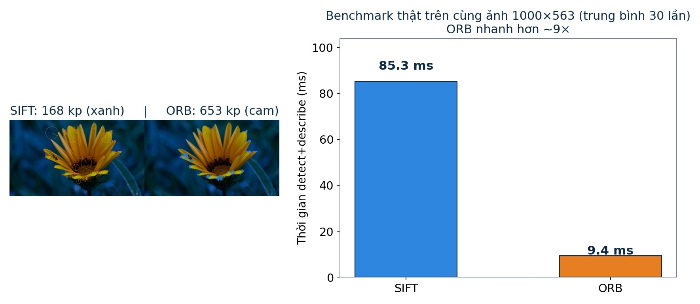
ỨNG DỤNG
Feature matching chạy đâu trong đời thực?
Ghép nhiều ảnh chụp liền nhau thành một tấm rộng — phone camera làm việc này mỗi lần bạn chụp panorama.
Định vị + dựng bản đồ real-time. ORB-SLAM là nền tảng của nhiều robot, drone, xe tự lái.
Gắn vật thể 3D lên bề mặt thật: tìm keypoints của marker / cảnh, tính ma trận chuyển đổi, đặt vật thể lên.
Từ nhiều ảnh chụp cùng vật thể ở góc khác nhau, khôi phục hình học 3D nhờ các cặp điểm tương ứng.
Bộ keypoints + descriptors làm « chữ ký » vật thể / ảnh để tìm trong kho dữ liệu lớn.
Theo dõi vật thể qua từng frame — thể thao, an ninh, phân tích chuyển động.
TÓM TẮT
SIFT & ORB — hai con đường, một mục tiêu
- DoG scale-space (≈ LoG rẻ) → keypoint có (x, y, σ, θ)
- Descriptor 128-D float, bất biến xoay / scale / sáng
- Chuẩn mực so sánh trong nghiên cứu nhiều năm
- Chậm hơn — hợp ảnh khó, offline, cần độ chính xác cao
- FAST + pyramid + Harris → keypoint nhanh, có scale
- θ bằng intensity centroid; rBRIEF 256-bit steered (học từ 205,590 test ứng viên)
- Hamming matching cực nhanh, descriptor nhẹ 16×
- Chọn khi cần real-time: SLAM, drone, AR, mobile
cv2.SIFT_create() · cv2.ORB_create(). Và nhớ: cả hai đều ăn ảnh xám — OpenCV tự chuyển từ ảnh màu (Bước 0).
TÀI LIỆU · PAPER GỐC · BLOG
Đọc sâu hơn — mọi con số trên trang đều tra được tới nguồn
Papers gốc
- Lowe (2004) — Distinctive Image Features from Scale-Invariant Keypoints, IJCV · §3 DoG≈LoG, 36 bins, 80%, r=10, clamp 0.2 đều ở đây
- Rublee et al. (2011) — ORB: An Efficient Alternative to SIFT or SURF, ICCV · §3.1 Harris, §3.2 centroid, §4.3 greedy (205,590 tests)
- Harris & Stephens (1988) — A Combined Corner and Edge Detector (Alvey) · công thức R = det − κ·trace²
- Rosten & Drummond (2006) — Machine Learning for High-Speed Corner Detection (FAST)
- Calonder et al. (2010) — BRIEF: Binary Robust Independent Elementary Features
- Lindeberg (1994) — Scale-Space Theory in Computer Vision · nền lý thuyết σ²∇²G bắt blob tối ưu
- Rosin (1999) — Measuring Corner Properties · intensity centroid cho góc
- Mikolajczyk & Schmid (2002) — An Affine Invariant Interest Point Detector · so sánh LoG / DoG / Harris
- ORB trên IEEE Xplore · Trang BRIEF của EPFL CVLab
Tutorial & giải thích
- OpenCV — SIFT intro · ORB · FAST · Harris · BRIEF
- Gil's CV Blog — A tutorial on binary descriptors, part 3 (ORB) · cách tính lại 205,590 test ứng viên
- Trang SIFT của David Lowe (UBC) — demo, code, patents
- Szeliski — Computer Vision: Algorithms and Applications · chương 4: Feature Detection & Matching
- Wikipedia — SIFT · ORB · Corner detection / Harris
Về trang này
- Mọi con số đối chiếu trực tiếp với paper gốc (36 bins · 1.5σ · 80% · r = 10 · 0.2 · 205,590 tests = C(676,2) − 22,560 · 2π/30 · N = 500).
- Ảnh tĩnh & số liệu « thật »: OpenCV 5.0 chạy trên ảnh mẫu — sinh lại bằng
.venv/bin/python scripts/generate_assets.py(đồng thời ghijs/real_data.jscho các tensor-box). - Widget tương tác: tính lại chính thuật toán bằng JavaScript ngay trong trình duyệt, không dùng ảnh vẽ tay.
Cảm ơn đã theo dõi — SIFT & ORB: chạm tới « đôi mắt » của máy tính.